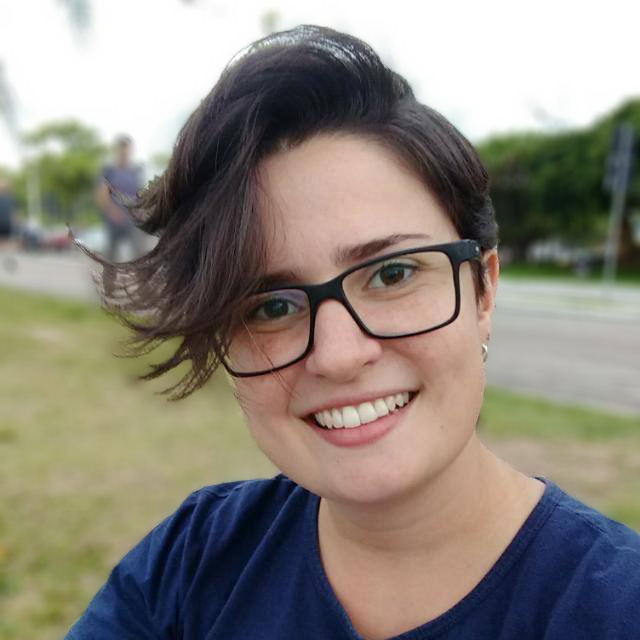

- Home
- >
- Currículo
Currículo
Dados Pessoais

Nome:
Samara Dias Machado
Data de Nascimento:
29/12/1991
Residência:
Florianópolis, SC
Idiomas:
Português (Nativo)
Inglês (Avançado)
Espanhol (Escrita/Leitura)
Sobre Mim
Concluí a graduação em arquitetura e urbanismo em 2017 e, após me graduar, permaneci disponível como freelancer e resolvi buscar conhecer mais sobre as áreas de design gráfico, web design e marketing digital, pois me identificava com assuntos desde quando estava na faculdade. Realizei alguns cursos online nessas áreas com o objetivo de me aperfeiçoar profissionalmente, a fim de conseguir um lugar no mercado de trabalho voltado para esse campo.
Meu foco atual para desenvolvimento e mercado de trabalho está na arquitetura, arquitetura/design de interiores e no design (3D / gráfico / webdesign).
Além disso sou musicista amadora, empregando meu tempo livre em tocar instrumentos e cantar.
Educação
2010-2017
Graduação em Arquitetura e Urbanismo - UFN (Universidade Franciscana)
2006-2008
Graduação no Ensino Médio - Escola de Ensino Médio Fronteira (GARRA)
Habilidades
Arquitetura
Arquitetura de interiores / Projeto de mobiliário / Consultoria
Artes Digitais
AutoCAD / SketchUp / VRay / Adobe Photoshop / Adobe Illustrator / CorelDRAW
Programação e desenvolvimento web
HTML / CSS
Experiência de Trabalho
2014-2016
Estagiária - BOX Studio³ Aquitetura e Consultoria - Santa Maria, RS
Voltar ao início